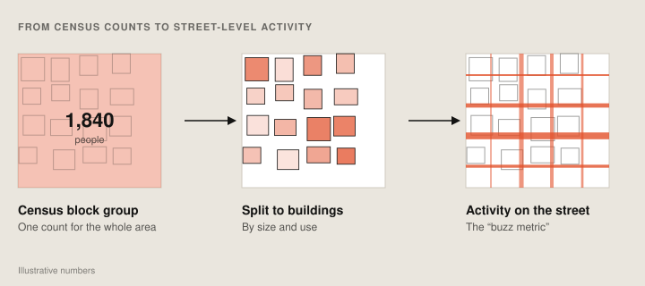

I design and build software for the built environment.
I’m a senior UX engineer and computational designer on Google Earth, with a background in architecture and urban planning from Columbia University. I build the tools that researchers, planners, architects, engineers and developers use to understand a site and what they’re building on it.
Selected work
2019–2026
Marquee map selection
One drag on the map to select any number of features, instead of a click per feature. The first way to select in bulk directly on Google Earth’s 3D map.
Google Earth · Interaction design, front end
Cut and fill
Draw a site and see how much earth has to be dug out or brought in to level it, and where. One of four terrain analysis tools in Google Earth.
Google Earth · Back-end engineering
Traffic signal level of service
How long do drivers wait at each traffic light? This layer grades every signalized intersection from A to F, hour by hour. Part of a launch that signed up 470+ paying professional users.
Google Earth · Data visualization, UI design
Solar layouts and potential
From the first version to the Solar API: estimate a site’s solar potential in minutes, with a panel layout for any building or parking lot.
Google Earth · Computational design
Mass-timber buildings, generated
Expanded the parametric software behind Intelligent City’s mass-timber housing, and measured the materials, cost and emissions of every design it produced.
Intelligent City · Computational design
Estimating pedestrian activity
A pipeline that estimates street-level foot traffic from census data and feeds it straight into generative design tools.
Sidewalk Labs · Computational designEarlier work
Columbia GSAPP and internships, 2016–20Beyond the Blue DotA web tool that turns census data into short stories about the people who live and work in a place. |
Urban planning · 2020 | |
Election data for 5M votersVerified voting locations and mapped what was on the ballot, state by state, for a nonpartisan voter guide used by more than 5 million people. |
Mapping · 2020 | |
wastespaceA recycling hub in Vieques, Puerto Rico, that turns the island’s plastic waste into products and creates jobs for women. |
Architecture · 2019 | |
The 20-minute libraryA Brooklyn library whose program came from researching who lives, works and visits within a 20-minute walk. |
Architecture · 2018 | |
Citi Bike accessWho can reach Citi Bike on foot or by subway, and who it leaves out. |
Mapping · 2017 | |
Airbnb analysisHow hosts and guests describe the same New York neighborhoods differently. |
Mapping · 2017 | |
Predicting urban sprawlA neural network trained on satellite images of Cairo, Dubai and Wuhan to forecast where cities grow. |
Machine learning · 2016 |


About
I came to software from architecture and urban planning, and the built environment is still what I care about most. I want my tools to keep getting closer to the people who design and construct it.
Experience
- Google, Senior Computational Designer (UX Engineer)Google Earth, and Delve by Sidewalk Labs before it joined Earth. Site analysis and building design tools, map interactions and data layers.2022–now
- Intelligent City, Computational DesignerMass-timber housing. Parametric building generation and design data tools.2021–22
- Columbia GSAPP, Graduate Researcher and Teaching AssistantCenter for Spatial Research. Teaching assistant for GIS across the school, and for Urban Analytics in the planning program.2017–20
- Buell Center, Columbia GSAPP, Research AssistantExhibition research for Living in America.2016
Education
- Columbia GSAPP, Master of Architecture and MS Urban Planning2020
- Barnard College, Columbia University, BA Architecture2016
Teaching and mentoring
- Mentorship Program, Columbia GSAPPMentor to an MS Urban Planning student, class of 20272026–27
- Guest Lecturer, Columbia GSAPPPrototyping in Urban Tech, taught by James Piacentini2026
Recognition
- Honorable Mention, Analytics, Geo Makers Hackathon at GoogleCame up with the idea and built the prototype with two teammates2025
Mentions
- Three degrees later, this graduate is ready to move onColumbia News · 2020
- Can fixing parking rules make Honolulu more affordable?Civil Beat · 2020
- Researcher, Homophily: The Urban History of an AlgorithmChicago Architecture Biennial · 2019
- 13 proposals to boost resilience in Vieques, Puerto RicoColumbia Climate School · 2019
- Researcher, Living in America: Frank Lloyd Wright, Harlem & Modern HousingBuell Center · 2017
Say hello.
Working on something for the built environment? I’d love to hear about it.